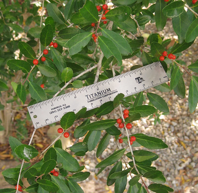
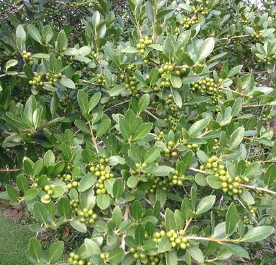
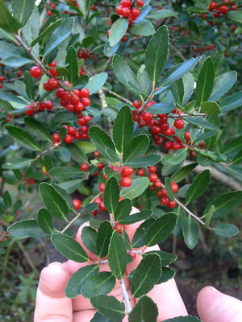
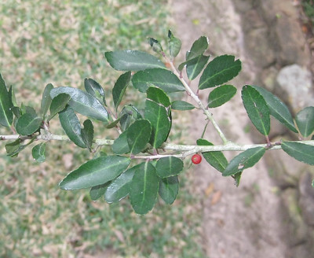

Scientific name: Ilex vomitoria
Abundance: plentiful
What: tea from leaves (tea)
How: Dry leaves, add boiling water
Where: woods
When: all year
Nutritional Value: caffeine and antioxidants
Dangers: Avoid the berries as they might cause an upset stomach in some people if consumed. Do not mistake Yaupon holly for the toxic Chinese privet (Ligustrum sinense). See below to learn how to tell them apart.

Female Yaupon holly in mid-summer. Male Yaupon hollies don't produce berries.

Female Yuapon holly in the late fall.

Close-up of Yaupon holly leaves.

The leaves of yaupon holly and Chinese privet are very similar in shape and size. An easy way to tell them apart is the leaves of the Chinese privet grow in a uniform pinnate manner. The leaves of yaupon holly have a random, chaotic growth pattern. Just remember "chaos = caffeine"! Also note that the edges of Yaupon holly leaves are bumpy whereas Chinese privet leaves have a smooth edge.
Left: yaupon holly (SAFE)
Right: Chinese privet (TOXIC)
Most east Texas landowners consider the small, gray-trunked Yaupon holly trees to be an invasive species. However, they are native and their prolific nature just shows how well adapted they are to this region. If you're a bird watcher, planting one (or more!) of these in your yard will insure a steady stream of cardinals, finches, jays, and many other birds come to feast on Yaupon holly's red berries. But don't you eat the berries as they make humans throw up!
Yaupon holly leaves, however, are truly a gift. They are the only naturally occurring source of caffeine that grows in Texas. And it's not just caffeine they bring! The leaves are also loaded with antioxidants and all the other compounds that make traditional green tea good for you. On top of all that, tea made from the leaves has a slight, natural sweetness to it making it not just fantastically good for you but also wonderful tasting.
Yaupon holly leaves are an excellent source of caffeine. There are a few different ways to prepare Yaupon holly leaves for brewing tea. The easiest and most effective method for freeing the caffeine is to air-dry them by cutting of a branch, hanging it indoors in a warm, dry area (not in direct sunlight) and let the leaves dry naturally. Most of the leaves will fall off the branch as they dry so lay a towel or something under it to catch the leaves. This method can take two weeks or more depending on the temperature and humidity. Slow-drying it like this allows naturally-occurring enzymes inside the plant cells to begin breaking holes through the cell wall. These holes allow the caffeine to escape into your hot water when making tea.
Forced-drying the leaves in a dehydrator or an oven set at 200F is popular. It is fast, usually taking just a day and this quick drying but will not allow as much caffeine to be released compared to slow air-drying. Leaves done this way are somewhat similar to green tea in mouth-appeal. It doesn't taste like green tea, but it has several similar "under-flavors", if that makes any sense.
The most complex, richest flavors comes from roasting the leaves in an oven set at 400F. I prefer to do this after the two week drying period. This requires some practice and experimentation. Lay the leaves on a cookie-sheet. There can be some overlap but each leaf needs some exposure to the air. Put the cookie-sheet in the oven and watch the leaves as they turn brown. Start with them being in the oven for just 4 minutes. The darker you let the leaves get the more roasted and complex flavors you will release. Warning: if they get too dark they'll have a scorched flavor.
{kind=link}